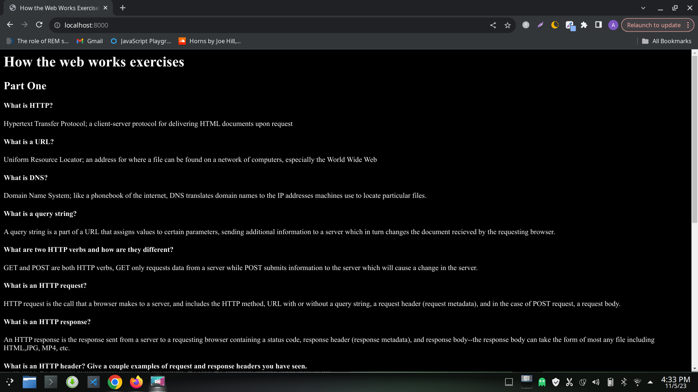

Hypertext Transfer Protocol; a client-server protocol for delivering HTML documents upon request
Uniform Resource Locator; an address for where a file can be found on a network of computers, especially the World Wide Web
Domain Name System; like a phonebook of the internet, DNS translates domain names to the IP addresses machines use to locate particular files.
A query string is a part of a URL that assigns values to certain parameters, sending additional information to a server which in turn changes the document recieved by the requesting browser.
GET and POST are both HTTP verbs, GET only requests data from a server while POST submits information to the server which will cause a change in the server.
HTTP request is the call that a browser makes to a server, and includes the HTTP method, URL with or without a query string, a request header (request metadata), and in the case of POST request, a request body.
An HTTP response is the response sent from a server to a requesting browser containing a status code, response header (response metadata), and response body--the response body can take the form of most any file including HTML,JPG, MP4, etc.
Response Header: HTTP/2 200 date: Sun, 05 Nov 2023 06:08:29 GMT content-type: text/html; charset=utf-8 alt-svc: h3=":443"; ma=86400 cache-control: private, max-age=0, must-revalidate, no-cache, no-store display: pub_site_sol expires: Sat, 04 Nov 2023 06:08:29 GMT last-modified: Mon, 10 Apr 2023 18:12:46 GMT pagespeed: off response: 200 set-cookie: ezoab_93605=mod184-c; Path=/; Domain=linuxize.com; Expires=Sun, 05 Nov 2023 08:08:29 UTC set-cookie: ezoadgid_93605=-1; Path=/; Domain=linuxize.com; Expires=Sun, 05 Nov 2023 06:38:29 UTC set-cookie: ezoref_93605=duckduckgo.com; Path=/; Domain=linuxize.com; Expires=Sun, 05 Nov 2023 08:08:29 UTC set-cookie: ezosuibasgeneris-1=f986f2c7-5399-43c1-6776-cd28f02970e1; Path=/; Domain=linuxize.com; Expires=Mon, 04 Nov 2024 06:08:29 UTC; Secure; SameSite=None set-cookie: active_template::93605=pub_site.1699164509; Path=/; Domain=linuxize.com; Expires=Tue, 07 Nov 2023 06:08:29 UTC set-cookie: ezopvc_93605=3; Path=/; Domain=linuxize.com; Expires=Sun, 05 Nov 2023 06:38:29 UTC set-cookie: ezepvv=466; Path=/; Domain=linuxize.com; Expires=Mon, 06 Nov 2023 06:08:29 UTC set-cookie: lp_93605=https://linuxize.com/post/curl-rest-api/; Path=/; Domain=linuxize.com; Expires=Sun, 05 Nov 2023 06:38:29 UTC set-cookie: ezovuuidtime_93605=1699164509; Path=/; Domain=linuxize.com; Expires=Tue, 07 Nov 2023 06:08:29 UTC set-cookie: ezovuuid_93605=3e6164a5-4c54-45d3-6f96-42472e6ee1bb; Path=/; Domain=linuxize.com; Expires=Sun, 05 Nov 2023 06:38:29 UTC strict-transport-security: max-age=15552000; includeSubDomains; preload vary: Accept-Encoding,User-Agent x-cache: HIT x-cache-hits: 1 x-ezoic-cdn: Hit ds;mm;5e4c7b7dc0f097d98bbe43ec2e9611fd;2-93605-83;6d95571a-6d54-44e9-583b-90a6607f4fe4 x-middleton-display: pub_site_sol x-middleton-response: 200 x-origin-cache-control: cache-control: public, max-age=0, must-revalidate x-served-by: cache-bfi-krnt7300101-BFI x-sol: pub_site x-timer: S1699164431.803064,VS0,VE1 cf-cache-status: DYNAMIC report-to: {"endpoints":[{"url":"https:\/\/a.nel.cloudflare.com\/report\/v3?s=8X6eIshoWaygJVejc6aXQF0lfFhs3s%2BRRjfYiCDaSAXpQaTyv3LCMyRqnB8HvoVEf74w%2BEA3nNJckdU9f3KFjinXIaSiiSjOy%2Fn50RELJpP6I7fZxXI4vJSrw1ad9g%3D%3D"}],"group":"cf-nel","max_age":604800} nel: {"success_fraction":0,"report_to":"cf-nel","max_age":604800} x-content-type-options: nosniff server: cloudflare cf-ray: 8212ec25aeb52f44-LAX content-encoding: br X-Firefox-Spdy: h2 Request Header: GET /post/curl-rest-api/ HTTP/2 Host: linuxize.com User-Agent: Mozilla/5.0 (X11; Linux x86_64; rv:109.0) Gecko/20100101 Firefox/119.0 Accept: text/html,application/xhtml+xml,application/xml;q=0.9,image/avif,image/webp,*/*;q=0.8 Accept-Language: en-US,en;q=0.5 Accept-Encoding: gzip, deflate, br Referer: https://duckduckgo.com/ Upgrade-Insecure-Requests: 1 Sec-Fetch-Dest: document Sec-Fetch-Mode: navigate Sec-Fetch-Site: cross-site Sec-GPC: 1 Connection: keep-alive Cookie: ezoadgid_93605=-1; ezoref_93605=duckduckgo.com; ezosuibasgeneris-1=f986f2c7-5399-43c1-6776-cd28f02970e1; ezoab_93605=mod184-c; active_template::93605=pub_site.1699164437; ezopvc_93605=2; ezepvv=97; lp_93605=https://linuxize.com/post/curl-rest-api/; ezovuuidtime_93605=1699164437; ezovuuid_93605=3e6164a5-4c54-45d3-6f96-42472e6ee1bb; ezds=ffid%3D1%2Cw%3D1536%2Ch%3D864; ezohw=w%3D768%2Ch%3D705; ezouspvv=0; ezouspva=0; cf_clearance=u4K_7KVgliSTfJIJGV5GsMEXVhe76s8sbcNJBdfelWA-1699164433-0-1-7bbd6bac.c4159da3.ec94d882-0.2.1699164433 TE: trailers
First, your browser chechs its local DNS cache for the file you are requesting. If the domain name is found and the IP address is still valid, the browser can directly establish a connection to the server. If the domain name is not found, the browser sends a DNS query to a DNS resolver. The DNS resolver searches it's own cache and queries other resolvers if necessary, until it finds the IP address for the requested domain. It then sends the IP address to the requesting machine, so the browser can establish a direct connection to the page.
1. Using curl, make a GET request to the icanhazdadjoke.com API to find all jokes involving the word “pirate” curl "https://icanhazdadjoke.com/search?term=pirate" What does a pirate pay for his corn? A buccaneer! Why couldn't the kid see the pirate movie? Because it was rated arrr! What did the pirate say on his 80th birthday? Aye Matey! Why are pirates called pirates? Because they arrr! Why do pirates not know the alphabet? They always get stuck at "C".% 2. Use dig to find what the IP address is for icanhazdadjoke.com ;; ANSWER SECTION: icanhazdadjoke.com. 300 IN A 104.21.66.15 icanhazdadjoke.com. 300 IN A 172.67.198.173
Make a simple web page and serve it using python3 -m http.server. Visit the page in a browser.
